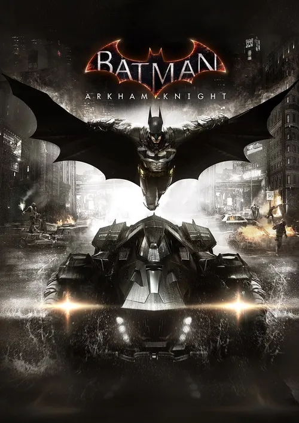

La saga Batman: Arkham, desarrollada principalmente por Rocksteady Studios, es aclamada universalmente por redefinir las adaptaciones de superhéroes y sentar un nuevo estándar en los juegos de acción y aventura. A lo largo de sus entregas emblemáticas —Arkham Asylum, Arkham City y Arkham Knight—, la franquicia sumerge al jugador en una Gotham oscura y opresiva, ofreciendo una narrativa madura con interpretaciones memorables de villanos icónicos como el Joker, Bane o el Espantapájaros, respaldada por la voz legendaria de Kevin Conroy como el Caballero de la Noche.

Su éxito radica en un bucle de jugabilidad impecable que te hace sentir verdaderamente como el héroe. Revolucionó la industria con su sistema de combate FreeFlow, que combina fluidez, contraataques y uso de gadgets en tiempo real, junto con secuencias de sigilo táctico (Depredador) e investigación detectivesca. Con la incorporación posterior de un vasto mundo abierto explorable mediante el planeo y la conducción del Batimóvil, la serie Arkham se consolida como una obra maestra imprescindible del entretenimiento interactivo.